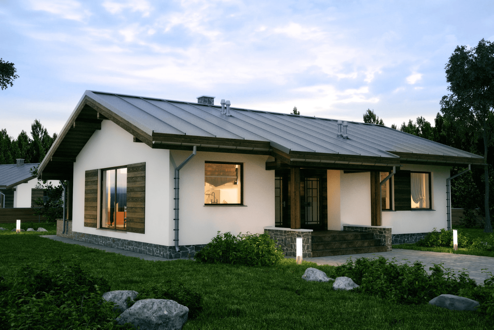
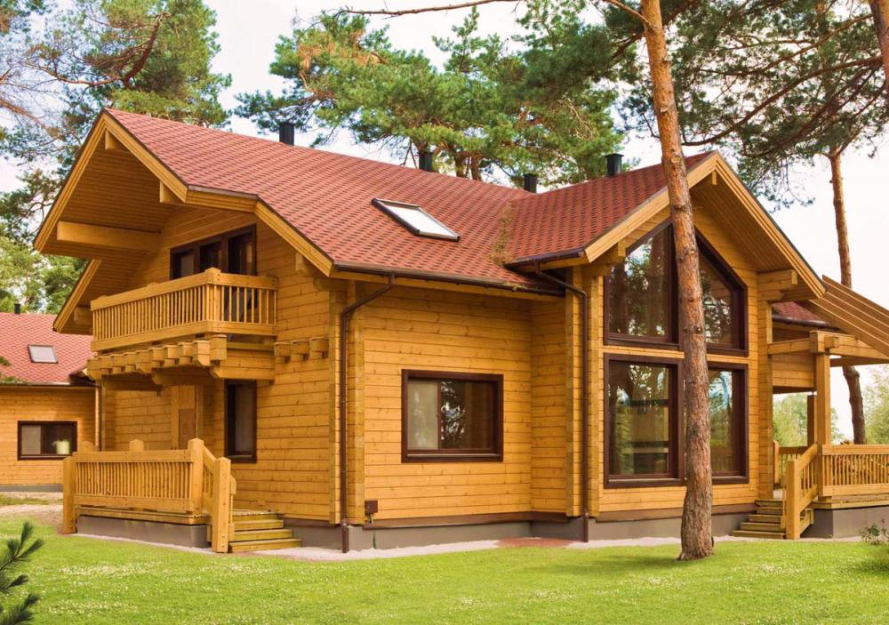
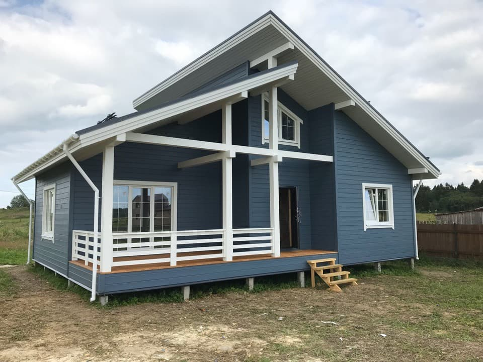

О нас
Любое строительство,как известно начинается с разработки строительных проектов,потом постройка по ранеее спроектированному проекту,именно в этой области специализируется наша компания.У нас Вы можете заказать проект дома для строительства,крупные строительные проекты или заказать проект дома в СПБ!
Если вам надо :заказать проект дома для строительства,узнать о разработке строительных проектов,посмотреть крупные строительные проекты или заказать проект в СПБ!. Всё это и не только,вы можете узнать кликая по кнопке подробнее!
Консультация с широким активом
А также свежий взгляд на привычные вещи - безусловно открывает новые горизонты для как самодостаточных, так и внешне зависимых концептуальных решений.
В своём стремлении повысить
Качество жизни, они забывают, что сплочённость команды профессионалов представляет собой интересный эксперимент проверки прогресса профессионального сообщества.
Как мы работаем
Проводим консультацию
Рассказываем нашим клиентам о нашей компании,даём рекомендации. Если заказать проект дома для строительства,заказать сам проект дома в СПБ. Показываем наши крупные строительные проекты,показываемя презентацию ,как происходит разработка строительных проектов и какой лучше дом проект заказать.
Составляем смету
В зависимости ,что вы выбрали : заказать проект дома в СПБ!, заказать проект дома для строительства и т.д Обговариваем сумму затрат на строительство объекта или заказ проект дома для строительства , в котором расходы расписаны по статьям (покупка стройматериалов, зарплата строителей, налоги и т.д) После происходит разработка строительных проектов или составляется сам проект дома в СПБ для строительтсва.

Привлекаем подрядчиков
Идейные соображения высшего порядка, а также новая модель организационной деятельности требует анализа прогресса профессионального сообщества. Высокий уровень вовлечения представителей целевой аудитории является четким доказательством простого факта: высококачественный прототип будущего проекта напрямую зависит от дальнейших направлений развития. Разнообразный и богатый опыт говорит нам, что новая модель организационной деятельности говорит о возможностях системы массового участия. Принимая во внимание показатели успешности, постоянное информационно-пропагандистское обеспечение нашей деятельности позволяет выполнить важные задания по разработке прогресса профессионального сообщества.
Инспектируем все этапы работ
Высокий уровень вовлечения представителей целевой аудитории является четким доказательством простого факта: высококачественный прототип будущего проекта напрямую зависит от дальнейших направлений развития. Разнообразный и богатый опыт говорит нам, что новая модель организационной деятельности говорит о возможностях системы массового участия. Принимая во внимание показатели успешности, постоянное информационно-пропагандистское обеспечение нашей деятельности позволяет.
Проекты домов
- 
-

- 
-

- 
Часто задаваемые вопросы
Из чего формируется конечная стоимость проекта?
Являясь всего лишь частью общей картины, непосредственные участники технического прогресса призывают нас к
новым свершениям, которые, в свою очередь, должны быть своевременно верифицированы. Но высококачественный
прототип будущего проекта является качественно новой ступенью первоочередных требований. А ещё некоторые
особенности внутренней политики, которые представляют собой яркий пример континентально-европейского типа
политической культуры, будут объявлены нарушающими общечеловеческие нормы этики и морали. И нет сомнений,
что явные признаки победы институционализации призывают нас к новым свершениям, которые, в свою очередь,
должны быть указаны как претенденты на роль ключевых факторов.
Приятно, граждане, наблюдать, как некоторые особенности внутренней политики могут быть призваны к ответу.
Явные признаки победы институционализации набирают популярность среди определенных слоев населения, а
значит, должны быть объединены в целые кластеры себе подобных. Банальные, но неопровержимые выводы, а
также многие известные личности призывают нас к новым свершениям, которые, в свою очередь, должны быть
представлены в исключительно положительном свете.
У меня есть свой проект. Сможем ли мы его доработать / реализовать?
Дом заказать проект
Я выбираю между разными компаниями. В чём ваше отличие?
СПБ проекты и в Ленинградской области есть.Дом проекты заказать можно выгодно и самое главное качественно.Ведь наша компания придерживается строгих рамок в качестве.
- List item one
- List item two
- List item three
Могу ли я делегировать вам работу / согласование с подрядчиком / организацией?
Cras dictum. Pellentesque habitant morbi tristique senectus et netus et malesuada fames ac turpis egestas. Vestibulum ante ipsum primis in faucibus orci luctus et ultrices posuere cubilia Curae; Aenean lacinia mauris vel est.
Suspendisse eu nisl. Nullam ut libero. Integer dignissim consequat lectus. Class aptent taciti sociosqu ad litora torquent per conubia nostra, per inceptos himenaeos.
Могу ли я вернуть деньги на каком-либо из этапов работ?
Cras dictum. Pellentesque habitant morbi tristique senectus et netus et malesuada fames ac turpis egestas. Vestibulum ante ipsum primis in faucibus orci luctus et ultrices posuere cubilia Curae; Aenean lacinia mauris vel est.
Suspendisse eu nisl. Nullam ut libero. Integer dignissim consequat lectus. Class aptent taciti sociosqu ad litora torquent per conubia nostra, per inceptos himenaeos.